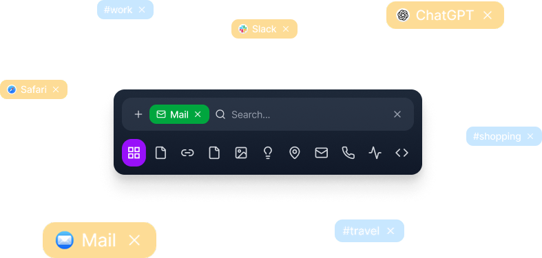
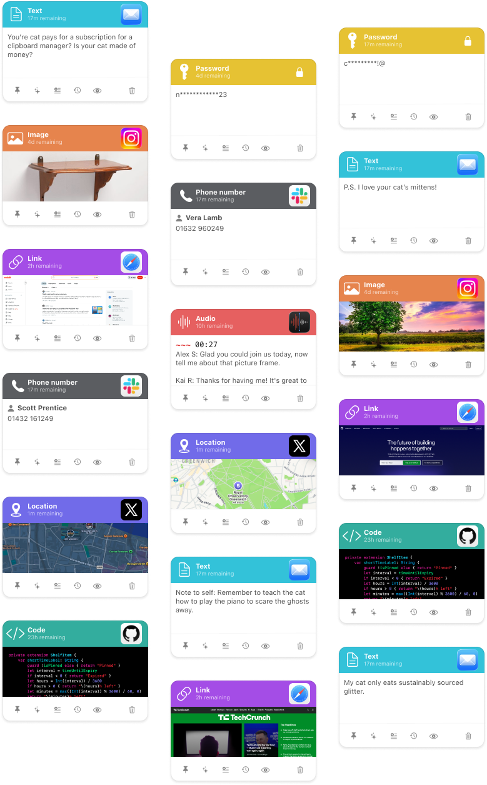

Shelf-ish for macOS, iPhone, and Apple Vision Pro
Local-first by design
No analytics, private by default, and sensitive clips can stay concealed.
Expiry keeps things tidy
Pin the important bits and let the rest evaporate before clutter becomes culture.
Search that actually helps
Find clips by content, source app, type, tag, or date when your memory has clocked off.
Built for Apple platforms
Mac first, with iPhone and Apple Vision Pro support for the same colourful shelf.
A calmer home for everything your clipboard forgets.
Shelf-ish keeps fleeting text, links, files, screenshots, code, audio, and more tidy across your Apple devices. Save it quickly, search it later, and let the rest expire before your desktop becomes a junk drawer with ambitions.
The App Store link can drop in later. For now the button is simply practising restraint.
Private shelf. Tidy mind.


Search, pin, preview, expire.Save the useful thing without breaking flow.
Quick capture, clipboard import, share-sheet saving, and rich previews keep short-lived information useful instead of vaguely remembered.
Everything lands in the right shape.
Text, links, files, screenshots, phone numbers, audio, and code all get their own treatment, so the shelf stays glanceable rather than generic.
On-device help, minus the analytics theatre.
Summaries, action items, and code explanation sit close to the clips themselves, where they are actually useful.
Everything in its right place
Real clips with real context, easy to scan at a glance.
Shelf-ish recognises what you saved and gives it the right treatment, so screenshots look like screenshots and code looks like code rather than a sad beige rectangle.
- Ten-plus clip types covering text, links, files, images, audio, location, and more.
- Rich previews for maps, files, images, transcripts, websites, and code snippets.
- Pinning, snoozing, and expiry so the shelf stays helpful rather than merely full.

Find anything fast
Source-aware
Search clips from Mail, Safari, Messages, Xcode, Slack, and more.
Type filters
Jump straight to text, links, files, screenshots, code, audio, or location.
Tag-friendly
Auto-tagged and manually tagged clips are both easy to bring back.
Quick paste
Pick the right thing and drop it back into your work without the ritual sacrifice.
Search by content, source, type, tag, or date.
When the clip you need is four tasks ago and two coffees behind you, Shelf-ish keeps it within reach instead of leaving you to reconstruct history from vibes alone.
A quick look at Shelf-ish in action.
A few sharper moments from the product itself, using the actual interface rather than cardboard stand-ins.
A shelf that feels native on the desktop
The main Shelf-ish view keeps capture controls, colourful clip cards, and quick actions close together without turning the interface into a furniture catalogue.
Quick search and fast filtering
Tags, source apps, and clip type filters help you get back to the right thing before it drifts into workplace mythology.
Type-aware cards and rich previews
Text, links, passwords, maps, phone numbers, audio, screenshots, and code clips all look distinct enough to scan quickly.
Need a hand?
Bug reports, setup questions, and the occasional “why is my clipboard doing that” all have a proper home.
Prefer the plain-English version?
The privacy page explains what Shelf-ish stores, what it does not collect, and where network activity is used only when needed.